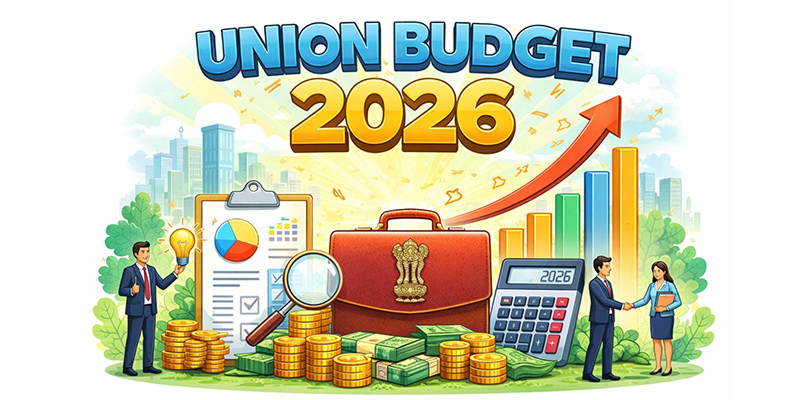

Union Budget 2026 of India: What Actually Changed and Why It Matters

Finance Minister Nirmala Sitharaman presented the Union Budget for 2026 - 27 in Parliament on February 1, 2026. The budget lays out the government’s priorities for the year ahead, with a clear focus on growth, investment, and long-term economic stability.
This year’s budget places strong emphasis on capital expenditure, infrastructure development, manufacturing, technology, and support for businesses, while keeping fiscal management in view amid global uncertainties.
Below is a clear breakdown of the key changes and what they really mean for you and the economy.
Infrastructure Gets a Major Boost
Capital expenditure has risen 9% to ₹12.2 lakh crore, backed by concrete plans. Seven high-speed rail corridors are in the works, connecting cities such as Mumbai-Pune, Hyderabad-Bengaluru, and Delhi-Varanasi. Twenty new National Waterways are set to be developed over the next five years.
An Infrastructure Risk Fund has been established to encourage private investments in big projects, reducing risk from the private sector. The budget allocated ₹5.98 lakh crore for transport and ₹5.94 lakh crore for defense, which are the two highest.
Technology and AI
The launch of India Semiconductor Mission 2.0 has a ₹40,000 crore allocation. The Electronics Components Manufacturing Scheme also received this funding to enhance the production of crucial electronic components.
Odisha, Kerala, Andhra Pradesh, and Tamil Nadu will develop rare earth processing hubs to support India’s long-term tech and EV goals. An artificial intelligence impact committee is to be set up on employment. It will also suggest measures for adaptation.
MSME and Biopharma
A ₹10000 crore SME Growth Fund has been announced under the budget. There is also an additional ₹2000 crore boost to the Self-Reliant India Fund to focus on MSMEs. The initiative Biopharma SHAKTI, backed with ₹10,000 crore over 5 years, will energise biopharma in India and strengthen India’s biologics and biotech manufacturing capabilities.
Healthcare and Agriculture
The healthcare infrastructure is being upgraded with three new All India Institutes of Ayurveda, five medical tourism hubs, and 50% capacity increase in district hospitals through new Emergency and Trauma Care Centers.
In the agricultural sector, the construction of 500 new reservoirs is being planned. Further, the plan is to support high-value crops. These include the likes of cashew, sandalwood, and cocoa. The use of these will help farmers supplement their income through diversification.
Textiles, Sports, and Education
The Mahatma Gandhi Handloom Scheme and National Fibre Scheme aim to make India self-sufficient in natural fibers like silk, wool, and jute. A mega textile park and the Textile Expansion and Employment Scheme will modernize clusters and support employment.
The Khelo India Mission is now a decade-long initiative covering talent identification, coach training, and sports infrastructure. Additionally, a program to manufacture high-quality sports equipment domestically was announced.
Education sees five university townships near industrial zones, integrating colleges, skill centers, and residential areas to combine learning with career opportunities.
Tax and Regulatory Updates for Investors and NRIs
The budget introduced select tax and compliance updates impacting market participants. STT on derivatives has been revised, with futures moving to 0.05% and options to 0.15%. For NRIs, property transactions are expected to become smoother with the proposed removal of the requirement to obtain a Tax Deduction Account Number (TAN), as greater responsibility for TDS compliance is proposed to be assigned to the buyer.
From a foreign investment perspective, the government has proposed a review of the FEMA framework with the objective of creating a more investor-friendly and simplified regime for persons outside India. It is proposed to liberalise the Portfolio Investment Scheme by doubling the individual PROI investment limit from 5% to 10% and raising the aggregate PROI investment limit from 10% to 24%, aimed at broadening foreign participation in Indian equity markets.
On the tax compliance front, the government has indicated measures to ease investor obligations, including rationalisation of return-filing timelines and an extended window for filing revised returns, subject to prescribed conditions. The process for submission of Form 15G and 15H is proposed to be streamlined through depository-level mechanisms, reducing repetitive filings and easing the compliance burden for eligible investors and senior citizens.
In addition, relief has been proposed in respect of tax collection at source on certain foreign remittances under the Liberalised Remittance Scheme, such as overseas travel, education and medical expenses, which is expected to reduce the tax outgo and improve cash flows for individuals and families with overseas financial commitments.
The budget has also indicated a one-time compliance facilitation measure for disclosure of certain foreign income or assets, aimed at helping taxpayers regularise past disclosures with reduced procedural complexity.
Women’s Empowerment
The Lakhpati Didi scheme gets a new companion in the form of SHE Marts, community-owned retail outlets giving women entrepreneurs a strong platform to grow and sustain their businesses.
Foreign Investment and Markets
The PIO equity limit in Indian companies rises from 5% to 10%, while the combined PIO cap increases from 10% to 24%. A market-making framework for corporate bonds will make that segment deeper and more active.
Conclusion
The fiscal deficit for FY27 is set at 4.3% of GDP, slightly lower than last year’s 4.4%. Capital expenditure, semiconductors, infrastructure, MSMEs, healthcare, and technology all receive focused attention and funding. These measures together are set to shape India’s economic direction in the coming years.
Sources: business standard, business today, News9
Disclaimer : This article is based on initial interpretations of the Union Budget 2026–27 speech and information reported by leading media sources at the time of publication. Figures, schemes and policy measures mentioned herein are subject to confirmation through official notifications, detailed Budget documents and subsequent clarifications issued by the Government of India. Readers are advised to refer to official sources for final and authoritative information.